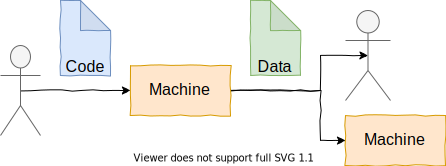

Write code for humans. Design data for machines.
[Part 1], [Part 2]
Two software engineers are having an argument. Andrew says, "it's all about the code - programming is the art of creating code". Beatrice disagrees, "it's all about the data - programs are just data transformations". So, who's right?
Both, of course! Programming is all about writing code. Programs are all about transforming data. Both code-centric and data-centric views are useful ways to think about programming. But I think the way we write our code & how we design our data should be different; in particular:
Code should be written for humans to read, but data should be designed for machines to read.
In other words, the most important audience for our code is humans (ourselves and other people), as we are the ones who will make-or-break the program in the future. And the most important audience for generated data is usually machines (other programs), because we tend to stack automation on top of existing automation. Therefore I believe "write code for humans, design data for machines" will help us create better programs, that work today and keep working tomorrow.
In this two-part series, we'll dive into these ideas - what does it look like to write for humans vs machines, and why should we do it? Keep reading here for the (less controversial) first part "write code for humans", or if you're already 100% sold on that, feel free to skip to part 2 for "design data for machines".
Introduction
First, to clarify - what is "code", what is "data"?

In this article, when I say "code", I mean something a human has written, that will be read by a machine (another program or hardware). When I say "data", I mean something a machine has written, that may be read by a machine, a human, or both. Therefore, a configuration file where you set logging.level = DEBUG is code, while virtual machine instructions emitted by a compiler are data.
Of course, code is data, but I think this over-simplified view (humans write code, machines write data) will serve us best for now...
Writing code for humans
As I program, I have two audiences - humans (myself and others) reviewing the code, and machines compiling/interpreting/linting/documenting the code. All programs must be written for machines to read (otherwise they're not programs in formal language, they're essays in natural language). And almost all programs should be written for humans to read.
Writing code for a machine means I can't write
int x = if (small) { 123 } else { 456 };...in C++, since if is a statement not an expression. And writing code for humans means I shouldn't write
auto y = (a?~b:-b)*(l+1/z(2))>>qq/q;...because that's just harsh!
So I must write for both human and machine. But I'd argue that most of my effort should be spent writing for my human audience. This means I think more about the human reading the program than the machine that compiles or runs it.
For example, here is a Python program, designed with the Python interpreter in mind (unhappy challenge: what does it do?)
from heapq import *
def get_results(input, n):
u, h, it = set([]), [], iter(input)
while True:
x = next(it, None)
if x is None:
break
elif x in u:
pass
elif len(h) < n:
u.add(x)
heappush(h, x)
elif h[0] < x:
u.add(x)
u.remove(heappushpop(h, x))
results = []
while h:
results.append(heappop(h))
return results[::-1]As far as I know, this implementation is correct, and the Python interpeter handles it fine - but it's not written for humans. Here's my best attempt at the same operation, written with a human audience in mind:
import heapq
def nlargest_unique(iterable, n):
"""Find the n largest unique elements in iterable.
iterable -- iterable(item) -- comparable, hashable items
n -- int -- maximum number of results
returns -- list(item) -- up to n largest items from iterable
"""
# N.B. We are careful to only retain references to the largest-so-far
# elements from iterable (to reduce peak memory)
heap = [] # min-heap containing largest items so far
unique = set([]) # copy of items in 'heap' (for fast membership query)
for item in iterable:
if item not in unique:
if len(heap) < n: # heap is filling up => add everything
heapq.heappush(heap, item)
unique.add(item)
elif heap[0] < item: # at capacity => replace min if greater
unique.remove(heap[0])
heapq.heappushpop(heap, item)
unique.add(item)
return sorted(heap, reverse=True)Hopefully you're with me in preferring to read this version to the original! We won't try to properly cover what makes a program easy for humans to read in this essay. But briefly, here's some of the differences between the two implementations: docstrings, comments, simplified control flow, variable names, keyword arguments and high-level language constructs.
Any fool can write code that a computer can understand. Good programmers write code that humans can understand.
Why write code for humans?
My guess is you've heard the mantra "write code for humans" before - it certainly isn't a new idea. But it's important to ask: why? Writing code for humans is an overhead. It is work that we don't need to do in order to get our program to run on the machine. So why do it?
Writing for humans is a good investment in the future of our code.
An investment in maintainable code. We usually need to change our programs after they've been written. They're not perfect, and need fixing. Or they're not complete, and need extending. When we do this, we'll find a trend: code that's easy for humans to understand will be correctly understood. Code that is correctly understood will be correctly modified. Therefore future versions of a human-readable program will break less.
An investment in reusable code. When we want to reuse code for a different purpose, we need to understand it (at least to understand what the code promises to do). If we don't properly understand what the code is trying to do, we'll use it incorrectly. When reusing functions or classes, this leads to a very common class of bug, the "expectation mismatch bug", where both caller and callee appear to be sensible and correct, but they don't interact correctly. Readable code will be easier to understand for the same level of effort, and might even encourage the reader to put in more effort (a virtuous cycle).
But it's "disposable". If you're sure your code really is "single use only", go ahead and write that inhuman love letter to your compiler! But exercise caution - even if you only ever need to debug my code an hour or a day later and go through a dozen edit-run-check cycles, it'd still probably be better to invest early in readability. You don't need to spend hours agonising whether to use a member or non-member function, or whether post.set_subject_to(x) or post.subject = x is the right API. But a little time naming things properly and factoring out well-defined functions wouldn't hurt.
But it's not for anyone else, only me. OK, this could be true. But in my experience I usually overestimate the memory and underestimate the laziness of the future me! When I think of the future me reading the code, I should assume that I'll forget the purpose, misunderstand how it works (wherever remotely possible) and make a raft of assumptions that would never occur to me now. So I'll write the code for dummies. I hope you're a bit more reliable than me - but if any of this applies to you, it's worth investing in readability now.
Perhaps most importantly, it is a surprisingly cheap investment. While writing the code for the first time, you're in the best position to make your intent clear. Your mind is already preoccupied with how it works, and you're making the decisions that will shape the code "live". It will take extra thinking and extra typing to make your thoughts clear to future readers, but given the advantages described above, that investment will pay off surprisingly quickly. And as we practice writing readable code, the costs get lower and lower.
Playing the long game
Let's stage a race between the fast-typing, just-get-it-working Words-Per-Minute William against the more careful human-readability-focused Readability Ruth...

Early on, William saves time by just getting the code working and not wasting any time on good variable names, clean control flow, or any readability features at all. Ruth is a bit slower because she does spend time on readability. But as the race progresses, Ruth travels just as fast or even faster, but William has slowed down to a crawl as he has to spend lots of time trying to understand older code & fix extra "misunderstanding problems".
A silly, contrived picture - but I've definitely seen this happen (maybe not in a day).
Caveat - the machine matters
In this post, I've mainly been talking about the form of our code, not the function. But I would hate to advocate for unnecessarily inefficient code because it passes a readability test.
As a side note: In some cases, an efficiency improvement can aid readability. For example, in Python a list supports the test "thingy" in mylist (which does what it says), but is implemented as a linear scan. A set is Python's hash set which also supports the test "thingy" in myset, implemented as a hash table lookup, and has much better performance for large collections. So a set is more efficient, but it's also a useful hint to the reader of the code that the main purpose of the variable is membership queries (also helping readability).
Sometimes we will need to sacrifice readability for efficiency and vice versa - there isn't a one-size-fits-all rule for this. But often, when we think about the form of code rather than its function (e.g. variable names, comments) it's more of an effort-vs-readability trade-off (which I have tried to address in this post).
Conclusion
In summary, I suggest that we should optimise code for human-readability, constrained by machine-readability. Since we and others will probably have to read our code in order to change, fix or reuse it, it's worth making the readability investment upfront. So our default position should be to put the effort in and write code that's as easy to read as possible. If we do this, our software will work better as it evolves and grows. If we don't, we risk getting stuck in a maze of misunderstandings, and introducing problems as fast as we fix them.
Let's make the investment and write code for humans.
Read on... [Part 2]